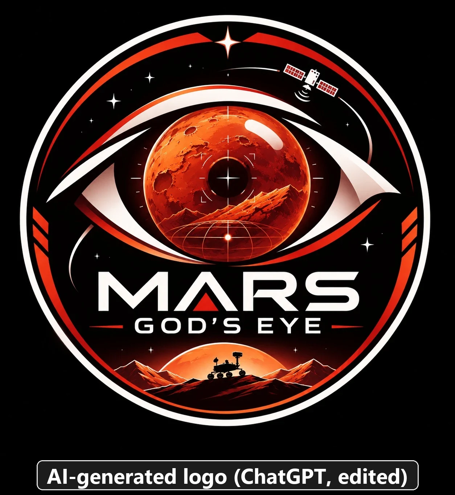

Mars God's Eye — Mission Viewer
NASA Space Apps 2026 · Interplanetary Survival Guide: Martian Map · team Houston, We Have a Bug!
Status: REPLAY. The featured recorded recovery uses real data, mapping and planner implementations with MOCK mission authority and kinematic execution. The human stops, replans, resumes and returns; rover and drone stay idle. Final READY does not mean scientific COMPLETE. The generated 2 km demo remains separate. Not a live mission and not certified for real operations. Open the 3D viewer.
What it shows
The viewer opens on a Mars globe of six zones; the default scene is the illustrative Jezero demo. The
recorded-recovery-002 entry (?run=recorded-recovery-002) opens a separately identified height-corrected recorder package over Daniel's
128 m Jezero scene (32×32 cells at 4 m, CTX source spacing 20 m), preserving its internal run ID, datum,
routes, resources, events and rasters. A separate illustrative Jezero demo spans a 3.4 km by 7.6 km display crop and shows a generated story: the drone
surveys an uncertain corridor, finds a scarp, the first route is invalidated and the astronaut is replanned around
it, reaches goal B and returns to base. That story is not an integrated mission result. The viewer never plans routes itself.
- Terrain layers: Orbital map (prior), Updated map (prior plus observations, by map version), Slope, Uncertainty.
- Routes: the route in force with its status, and invalidated routes kept visible (dashed) for comparison.
- Agents and resources: poses, modes, oxygen, energy and time, in a details panel and an agent dial with a heading-up minimap.
- Ground layers tab: USGS SIM 3464 geologic units draped on the terrain and a schematic cut-away (not measured stratigraphy).
- Atmos tab: historical MEDA summaries at Jezero and an estimated crew dose from MSL RAD (measured at Gale; estimated at other zones with RAD's dose-pressure relation); not current weather.
- First person: the view from the astronaut, rover or drone, with compass, site bearings, resources, the route ahead and the next waypoint.
- Terrain scan: a visual pulse around the astronaut in first person that redraws prior-derived slope classes and NoData on the surface; no sensor, observation, mission command or map/route change.
Controls
| Key | Action |
|---|---|
| Space | Play or pause the replay |
| ← → | Seek 5 s back or forward |
| Home | Restart |
| F | Follow the selected agent |
| V | Third or first person while following an agent |
| Q | Terrain scan in first person (display only); rotates the view otherwise |
| B | Camera sway in first person |
| G | Grab-to-drag map |
| Q E | Rotate the view |
The historical ?run=recorded-recovery-001 remains available unchanged.
An optional ?gateway=<url> panel shows read-only gateway status separately from the saved 3D scene;
it sends no goals and a connection does not certify LIVE execution.
URL parameters: ?run=demo (default: the illustrative Jezero story),
?run=gale-demo, gusev-demo, insight-demo, meridiani-demo or melas-demo (the other zones),
?run=recorded-recovery-002 (recorded real-planner recovery, intro omitted), or ?run=mock-vertical-001 (historical flat-MOCK sample).
?nointro=1 skips the demo intro. The entry folder is separate from the recorded run ID.
Data sources
| Data | Source | Use |
|---|---|---|
| Recorded terrain | Daniel's 128 m public Jezero CTX package, 4 m grid / 20 m native source, separate MGS/MOLA regional context | Real public source data; remeshing adds no native detail |
| Demo terrain | Separate provisional 2 km Mars 2020 TRN CTX DTM crop, NASA/USGS Astrogeology, 20 m grid | Real terrain, generated mission story |
| Surface image | MRO CTX Jezero orthomosaic, controlled (Mars 2020 TRN), NASA/JPL-Caltech/MSSS/USGS, via JPL Mars Trek | Real, resampled |
| Geology | USGS SIM 3464, Jezero crater and Nili Planum, 1:75,000 (USGS-NASA Planetary Geologic Mapping) | Real interpretation; boundaries about 100–200 m accurate |
| Environment | Perseverance MEDA daily summaries (Jezero); MSL RAD surface dose rate (Gale, Hassler et al. 2014) | Historical references, not live |
| Mission, agents, budgets, observations, POIs | Replay fixture and ROS mock runs | Simulated or synthetic |
Product identifiers and processing: docs/data_sources.md.
Limits
- Slope uses Horn 3×3: a 12 m computational window on the 4 m recording grid, 60 m on the 20 m demo grid. Native source spacing remains 20 m; neither is a local hazard measurement.
- Height uncertainty in the demo is assumed (set by hand), not measured.
- Vertical exaggeration is visual only and specified per run; absolute coordinates and datum are preserved.
- Orbital-preview bands and resource thresholds are display choices, not validated safety limits.
- Geology boundaries have roughly 100–200 m registration uncertainty. Context layers load only for matching scenes; they do not identify an exact sampling cell.
- Scientific three-role mission acceptance and private-browser/backend-off evidence (AC-08) remain separate open checks. The recorded recovery is scoped MOCK software evidence.
Machine-readable access
- Featured package: manifest, timeline, closing snapshot and public rasters. Counts, snapshot closure, route identity, geometry and consumed versions are validated before rendering.
- llms.txt: this information in Markdown for language models.
- replay/demo/manifest.json, timeline.json and routes.json: the demo run.
- In the running viewer,
window.mge.state()returns the current replay state as JSON.
AI use
AI tools were used and are declared, with the affected files, in AI_USAGE.md and ai_usage.json. The intro video (Kling) and the astronaut portrait (ChatGPT) are AI-generated and carry a visible "AI-generated" watermark.